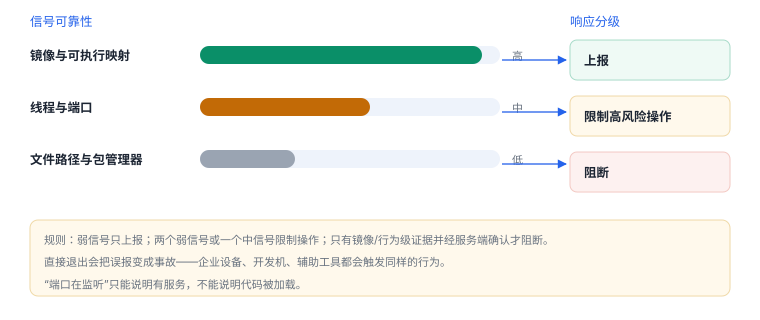

注入与越狱检测
检测的价值不在“能不能发现”，而在“发现之后做什么”
注入与越狱检测本质是收集信号：镜像列表、线程、端口、文件、行为。每条信号都有可靠性上限与误报代价，工程上要做的是分级响应，而不是一发现就退出。
1. 检测面：六类信号与可靠性
| 面 | 信号 | 可靠性 | 误报来源 |
|---|---|---|---|
| 镜像 | 出现未随包分发的动态库 | 高 | 调试构建、内嵌工具 |
| 内存 | 未签名的可执行映射 | 高 | JIT 类框架（需授权） |
| 线程 | 非应用创建的线程 | 中 | 系统框架线程 |
| 端口 | 本机端口监听 | 中 | 调试与本地服务 |
| 文件 | bootstrap 目录、管理工具 | 低 | 路径可改名 |
| 行为 | 能 fork、能加载未签名库 | 高 | 企业设备、测试机 |
2. 镜像检查
C：枚举已加载镜像，找出不在预期清单里的库
#include <mach-o/dyld.h>
#include <string.h>
for (uint32_t i = 0; i < _dyld_image_count(); i++) {
const char *name = _dyld_get_image_name(i);
if (name && strstr(name, "Frida")) {
// 记录：索引、路径、是否在允许清单内
}
}要点：按“允许清单”判断，而不是按关键字黑名单；关键字随时能改，允许清单只需维护自己打包的库。

3. 行为检查
fork()在正常沙盒里通常失败；成功说明沙盒被放宽。- 尝试加载一个自建的未签名库，成功说明签名校验被短路。
- 检查自身是否被跟踪（见 06 讲的
P_TRACED）。
4. 分级响应
| 风险等级 | 触发 | 动作 |
|---|---|---|
| 低 | 单个弱信号（路径命中） | 上报，不做阻断 |
| 中 | 两个以上弱信号，或一个中信号 | 限制高风险操作 |
| 高 | 镜像/行为级证据，且服务端确认异常 | 要求重新认证、收紧权限 |
分级的意义
直接退出会把误报变成事故：企业设备、开发机、辅助功能工具都可能触发检测。把“发现”和“处置”分开，才有回旋余地。
直接退出会把误报变成事故：企业设备、开发机、辅助功能工具都可能触发检测。把“发现”和“处置”分开，才有回旋余地。
5. 误报与代价
| 做法 | 收益 | 代价 |
|---|---|---|
| 检测后直接退出 | 阻断明确 | 误报即事故 |
| 仅上报 | 无用户影响 | 对攻击者无成本 |
| 分级 + 服务端判定 | 可控 | 需要后端配合 |
6. 失败分流
| 现象 | 原因 | 查哪里 |
|---|---|---|
| 正常用户被拦 | 黑名单误命中 | 改为允许清单 |
| 检测从不触发 | 信号被清零或代码未执行 | 断点确认调用路径 |
| 注入后未发现 | 注入路径不在镜像列表里 | 补充内存与线程信号 |
| 触发后无法恢复 | 没有降级路径 | 设计可逆响应 |
7. 一次真实排查记录：正常用户被拦
- 现象：企业设备用户反馈“打开就退出”，普通用户不受影响。
- 先看信号：日志显示命中路径类检测——某个目录存在。
- 再问来源：该目录属于系统组件，并非越狱产物；路径黑名单误伤。
- 改判据：主判据换成行为级（能否
fork、能否加载未签名库），路径降为辅助分。 - 结论与限制：记录“误报源于路径黑名单”，并注明企业设备需单独回归。
8. 工程权衡：多久检测一次
| 时机 | 覆盖 | 代价 |
|---|---|---|
| 每次启动 | 冷启动路径 | 拖慢首屏，误报影响最大 |
| 进入敏感页 | 关键业务 | 用户可感知的延迟 |
| 定时轮询 | 持续状态 | 耗电，且可被“检测前还原”绕过 |
| 事件触发 | 支付、导出等高风险动作 | 实现复杂，需埋点 |
没有“全都查一遍”的选项：检测频率越高，误报与耗电越明显。工程上通常选“启动粗查 + 敏感动作细查”。
9. 数据细节：一次扫描的成本
| 检测 | 成本量级 | 可缓存 |
|---|---|---|
| 枚举镜像 | 与镜像数量线性相关（数十个） | 否，每次启动重算 |
| 路径探测 | 与路径数线性相关（几条） | 是，但容易被改名绕过 |
| 行为检测 | 一次 fork 或 dlopen | 否，且会产生副作用 |
三类检测里，只有镜像枚举既便宜又难绕过；行为检测最有力，但每次执行都会留下痕迹，也可能影响应用自身。
10. 自测
- 为什么镜像检查要用允许清单而不是关键字？
- 行为级信号为什么比路径信号可靠？
- “检测到就退出”的风险是什么？
- 分级响应中，服务端扮演什么角色？